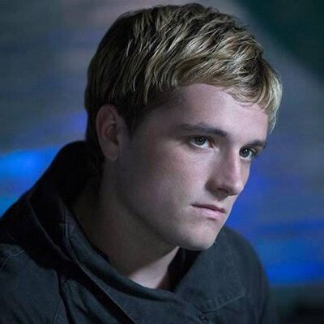
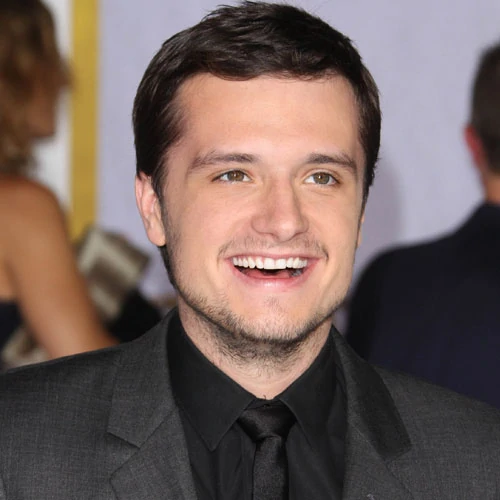
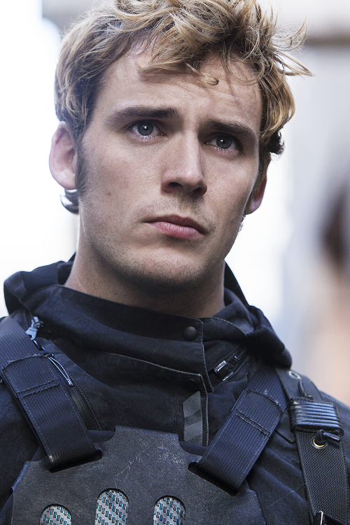
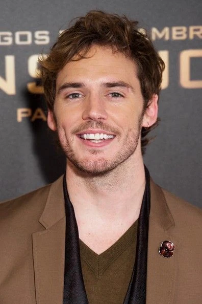
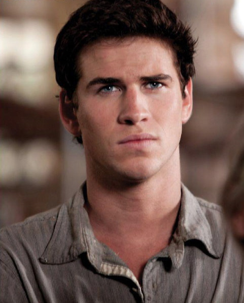
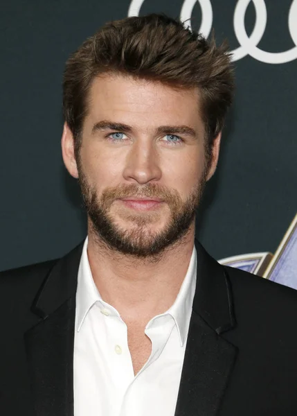
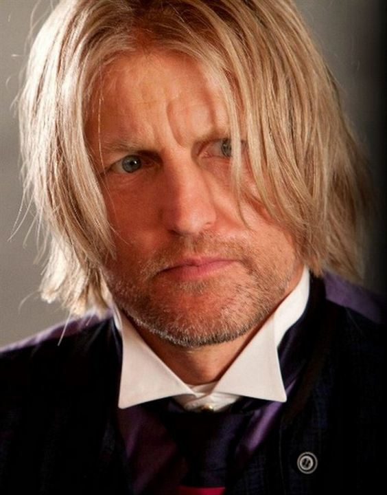
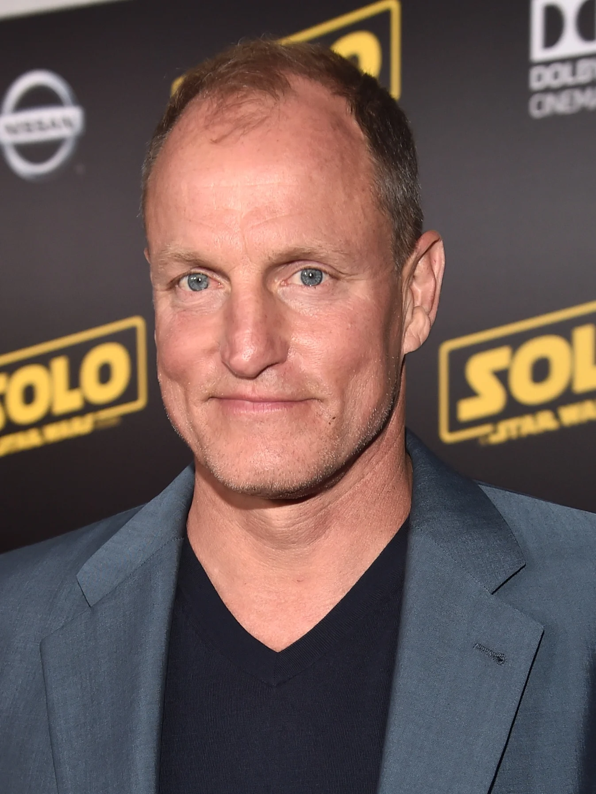
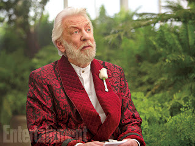
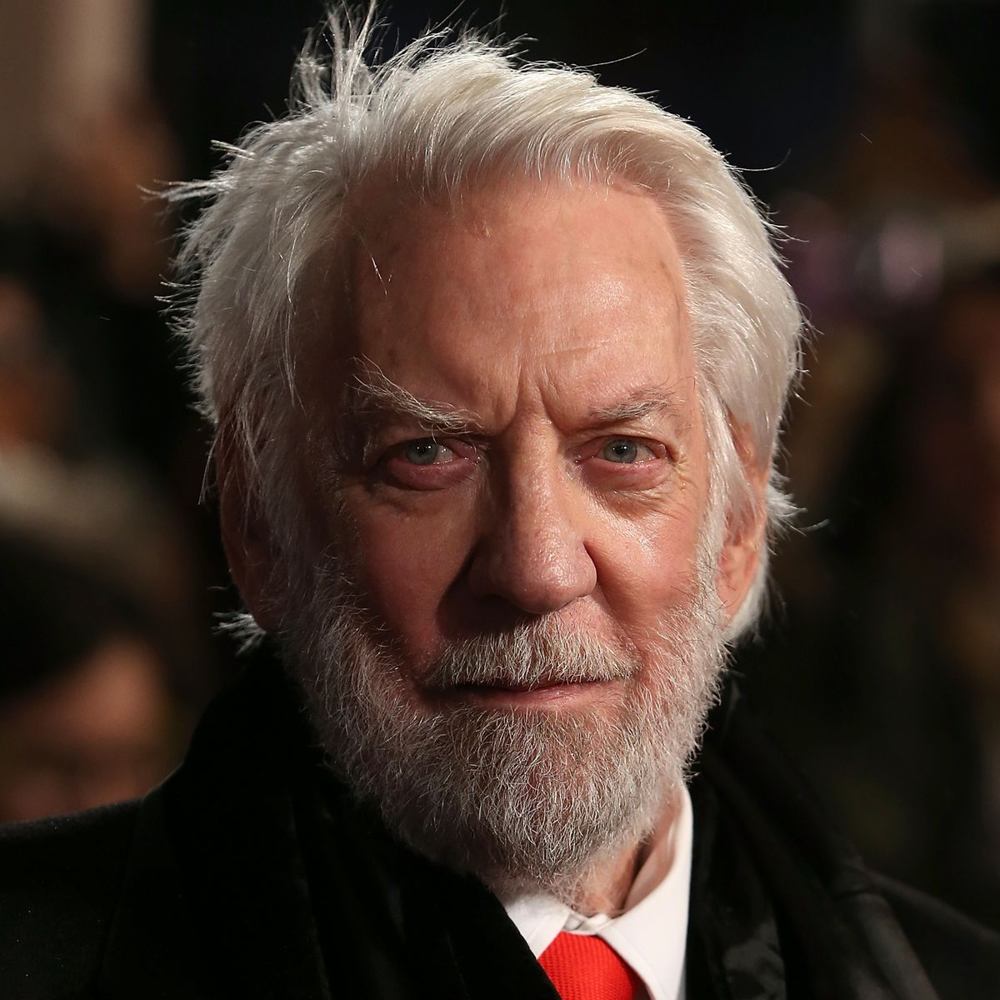

Elenco
Jennifer Shrader Lawrence é uma atriz norte-americana, vencedora do Oscar de Melhor Atriz, que alcançou o reconhecimento internacional através de suas atuações como a mutante azul Mística na franquia X-Men e a heroína Katniss Everdeen na franquia Jogos Vorazes-em chamas Nascimento: 15 de agosto de 1990 (idade 32 anos),


Joshua Ryan Hutcherson, mais conhecido como Josh Hutcherson, é um ator, produtor e diretor norte-americano. Josh começou sua carreira no início dos anos 2000 ao aparecer em vários comerciais, porém seu grande destaque veio ao protagonizar os filmes "ABC do Amor" e "Zathura: Uma Aventura Espacial", ambos de 2005. Nascimento: 12 de outubro de 1992 (idade 30 anos), nasceu em Kentucky, EUA
 Samuel George Claflin é um ator britânico. Claflin começou a carreira de ator em 2010 na minissérie de TV Os Pilares da Terra como o personagem Richard. No mesmo ano, atuou no filme para televisão O Futuro Perdido e na primeira temporada da série Any Human Heart 27 de junho de 1986 (idade 36 anos) nasceu em Ipswich, Reino Unido
 Liam Keith Hemsworth é um ator australiano mais conhecido pelos seus papéis de "Gale Hawthorne", em Hunger Games, "Josh Taylor" na novela Neighbours, "Marcus" na série televisiva The Elephant Princess e "Will Blakelee" em The Last Song, Nascimento: 13 de janeiro de 1990 (idade 33 anos), nasceu emMelbourne, Austrália
 Woodrow Tracy Harrelson, é um ator norte-americano. Foi indicado ao Oscar três vezes, 1996, 2010 e 2017. É filho de Diane Lou e Charles Harrelson, Woody Harrelson é defensor da legalização do uso da maconha e é militante em causas ecológicas, apoiando o grupo ambientalista Ruckus Society.Nascimento: 23 de julho de 1961 (idade 61 anos), Midland, Texas, EUA
 Donald Edward McNichol Sutherland OC é um premiado ator canadense com expressiva atuação no cinema e televisão estadunidenses. Com uma carreira de mais de seis décadas, ganhou diversos prêmios como o Globo de Ouro e Emmys, sendo também nomeado ao Óscar várias vezes. Nascimento: 17 de julho de 1935 (idade 87 anos), Saint John, Canadá
 página inicial Voltar para página inicial